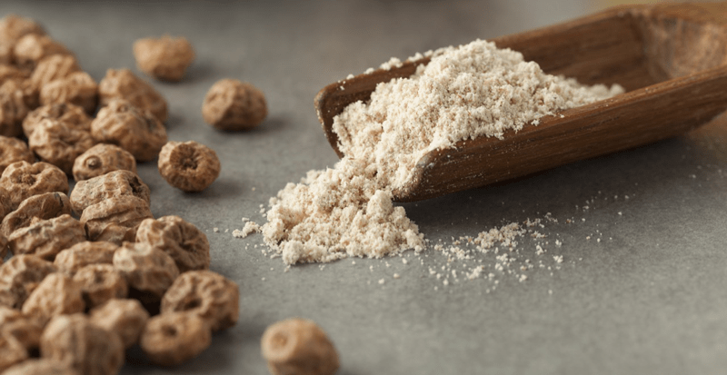

Tiger Nut Flour | Store Bought | Raw
Tiger Nut flour has a fluffy texture, a sweet taste, and is gluten-free, grain-free, nut-free, seed-free, coconut-free, and raw. If you know anyone who has nut allergies, this makes the perfect almond meal replacement. How can this be? Tiger nuts are a tuber, a small root vegetable. (totally tubular dude!) For more information on tiger nuts, click (here).

When we think of the basic structure of flour, we tend to associate flour with the words gluten, carbohydrates, and starches… but did you know that not ALL carbohydrates and starches are utilized the same within the body?
There is such a thing as resistant starch, which functions like fermentable, soluble fiber, meaning that it passes through the upper digestive tract unchanged. In other words, it is resistant to digestion. Other foods are also referred to as a resistant starch… click (here) for a great list of foods that contain resistant starch.
Why is resistant starch a good thing?
Well… because it passes through the stomach and small intestine undigested, it lands in the colon where it feeds the friendly bacteria in the gut (4). Once it nestles down in the gut, it transforms into short-chain fatty acids, one of them being butyrate! Oh, I can tell you are on the edge of your seat by now. :)
If you are a nutritional geek (spoken with respect), click on this (link) to get the low down on it. Why should we get excited about butyrate? It is the preferred fuel of the cells that line the colon; it helps reduce the pH level in the colon, which can potently minimize inflammation. Oh, trust me, there are other amazing benefits of resistant starch, such as improving insulin sensitivity, lower blood sugar levels, reduced appetite, and other various benefits for digestion.
Health Benefits: (source)
Butyrate can’t get all glory… Tiger nut flour has as much potassium as coconut water and as much iron as red meat and spinach. It is rich in Vitamin E and unsaturated fatty acids, such as oleic acid. Oleic acid is an omega- 9 fatty acid and is naturally found in animal and plant oils. Moving on, it is high in magnesium, calcium, phosphorous, folate, iron, zinc, and B6. It is safe for those who have diabetes, heart disease, cardiovascular disorders, digestive disorders, and autoimmune diseases. An all-around good ole “allergen-free” flour!
How can I use it?
Since tiger nuts are high in natural sugars, you can often reduce the amount of added sugar in recipes, which is excellent for people with diabetes and everyone else! It can be used in most baking and smoothie recipes, adding a sweet and nutty flavor. Use it for cookies, brownies, cakes… even pizza dough (for those of you who eat cooked foods as well). They say that you can replace regular flour at a 1:1 ratio… I haven’t tested that myself, and it will take some playing around with, especially when using it raw recipes.
YES! I got permission from Jim at the main headquarters of Tiger Nuts, to share an email that was sent to me regarding if they are raw or not. The following reads: (note: always check with the manufacturer if you use other brands) You can click (here) to find the brand that I have tested and are raw.
Hi Amie Sue,
As requested through our New York office, hopefully, the following explanations will answer your questions.
Our Tiger Nuts are raw, they are not heat-treated and not going through processes that imply heat. We dry the Tiger Nuts most of the time naturally or in dedicated drying equipment below 38ºC.
This is also valid for Tiger Nuts Flour. Our company uses a unique process of producing Tiger Nuts Flour and mill the Tiger Nuts below 45ºC, then immediately pack the product in vacuum packaging.
Tiger Nuts Oil is a high-quality oil extracted by a cold, virgin process to ensure that it retains all the unique nutritious qualities of the Tiger Nut itself.
When making Tiger Nuts milk, the remaining material on the bottom of the container is starch, known as resistant starch. This is absolutely normal and also healthy, it can be found in fresh horchata and some horchata produced in Spain as well. Just mix it all well before drinking.
I hope you find the information helpful.
Best regards. Jim
UK Office, Jim McNulty – Partner
Suite 11, 41 Couching Street, Watlington, Oxfordshire, OX49 5PX
© AmieSue.com